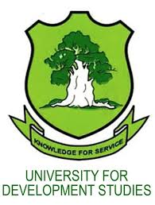

About This Project
This project was developed as part of the Third Trimester Field Practical Program (TTFPP), a key academic requirement of the University for Development Studies (UDS). It was carried out by students posted to KOFORIDUA- a Bonsu Sub community, who applied their knowledge to support rural healthcare through technology.
Main Developer
Korkor Steve Asinfor(Leader)
DOCTOR OF PHARMACY
SCHOOL OF PHARMACY AND PHARMACEUTICAL SCIENCES
Team Members
Wisdom Baleen Laar
BACHELOR OF BUSINESS
SCHOOL OF BUSINESS
Abdul Samed Issaku
BACHELOR OF PUBLIC HEALTH
SCHOOL OF PUBLIC HEALTH
Andrews Dayaal Labilla
DIPLOMA IN BASIC EDUCATION
FACULTY OF EDUCATION
Beatrice Adongo
DOCTOR OF PHARMACY
SCHOOL OF PHARMACY AND PHARMACEUTICAL SCIENCES
Lateefa Kassim
BACHELOR OF PUBLIC HEALTH
SCHOOL OF PUBLIC HEALTH
Hadija Pagnaa Mohammed
BACHELOR IN INFORMATION TECHNOLOGY
FACULTY OF EDUCATION

Monica Larba
DIPLOMA IN EDUCATION
FACULTY OF EDUCATION
Coordinator
Name: Mr. Sharif-Deen
Role: TTFPP Program Coordinator
About UDS
The University for Development Studies (UDS) is Ghana’s first public university in the North, established by the Government of Ghana under PNDC Law 279 and gazetted on 15th May 1992. The university was founded with the following aims:
- To provide higher education to all persons suitably qualified and capable of benefiting from such education.
- To undertake research and promote the advancement and dissemination of knowledge and its application to the needs and aspirations of the people of Ghana.
- To blend academic work with community interaction for the total development of northern Ghana and the country as a whole.
UDS follows a unique philosophy that emphasizes addressing societal challenges, particularly in rural areas, by integrating field-based, practical training into academic work.
The university has a pro-poor focus, reflected in its teaching methods, research approach, and community outreach. This ensures that its training contributes directly to poverty reduction and national development.
Key Unique Features of UDS:
- Its location and multi-campus system.
- Its pro-poor vision and commitment to solving structural causes of poverty.
- Its community engagement programs: the Third Trimester Field Practical Programme (TTFPP) and Community-Based Education and Service (COBES).
UDS began academic operations in September 1993 with 40 students admitted to the Faculty of Agriculture. Since then, several faculties, schools, institutes, and centers have been established.
Current Structure:
- Tamale Campus: Central Administration, School of Medicine, School of Allied Health Sciences, School of Nursing and Midwifery, School of Public Health, Faculty of Education, and Desert Research Institute.
- Nyankpala Campus: Faculty of Agriculture, Food and Consumer Sciences, Faculty of Natural Resources and Environment, Faculty of Biosciences, School of Engineering, WACWISA, and WAC-SRT.
- Tamale City Campus: Graduate School, Institute of Interdisciplinary Research, Institute of Distance and Continuing Education, Colleges of Education Affiliation, and Business Innovation and Incubation Centre.
- Tamale North Campus: School of Applied Economics and Management Sciences.
- Eastern Campus (Yendi): Faculty of Communication and Cultural Studies, Faculty of Sustainable Development Studies, Centre for Culture, Heritage and African Studies, and Centre for Peace and Security Studies.
The oldest faculty of the university remains the Faculty of Agriculture, Food and Consumer Sciences. UDS now runs both undergraduate and graduate programs, community outreach, and research activities aimed at promoting sustainable development and economic growth.
The Directorate of Community Relations and Outreach Programmes (DCROP) oversees TTFPP, COBES, teaching practice, and homestay programs for international students.
UDS Anthem
U.D.S.- Light Of The North
U.D.S.- A Pride And A Hope
U.D.S.- Is An Icon Of A Nation
We're A Light, And A Pride, And A Beacon Of Development
Our Knowledge Is For Service
HereIn Lay The Cradle Of Academic Excellence
Practicalizing Education For Life
Uniting The People In Development
Inspiring Every Mind, Every Heart And Every Hand
Providing The Best Of Our Higher Education
Praise Be To God For The Blessings Over Us
University For Development Studies
U.D.S.- Your The Heart Of Our Minds
U.D.S.- Develop Our Land